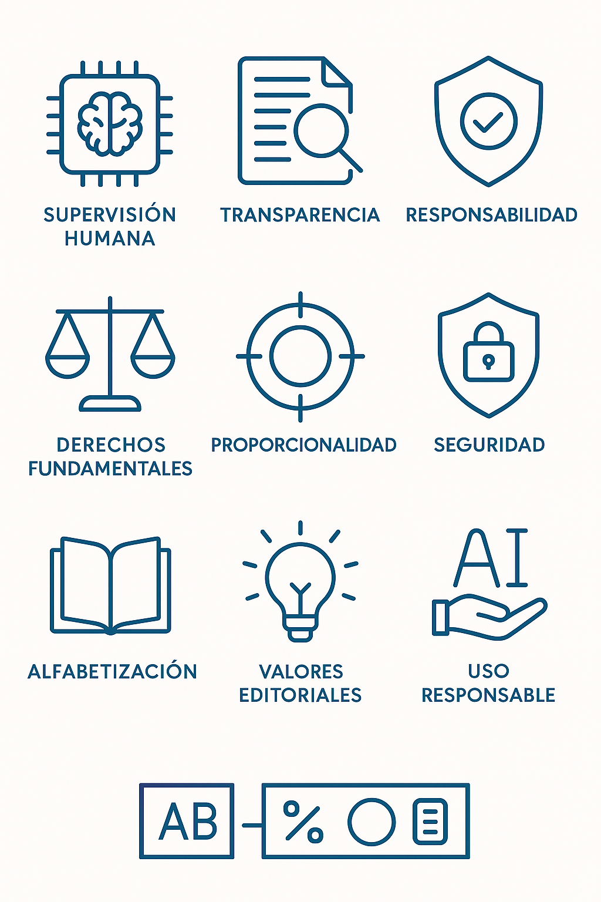

Principios rectores
- Supervisión humana: cualquier uso de IA debe ser supervisado por una persona que será responsable del contenido generado.
- Uso ético, transparente y responsable: todo contenido generado con (ayuda de) IA debe estar identificado: "Contenido generado con (ayuda de) IA". No se permite el uso de IA para manipular imágenes o declaraciones que alteren el sentido original del contenido informativo.
- Protección de datos y privacidad: las herramientas de personalización de contenidos, deben contar con el consentimiento explícito del usuario.
- Respeto derechos fundamentales: la IA debe respetar en todo momento la privacidad, la dignidad humana, la igualdad, libertad de expresión y derecho a la información veraz.
- Rendición de cuentas: el medio se hace responsable de todos los contenidos publicados (sean o no generados por IA).
- Proporcionalidad: el uso de IA en medios debe justificarse por su valor añadido, eficiencia y mejora en los flujos de trabajo.
- Seguridad: toda herramienta debe ser evaluada y revisada por los responsables del medio antes de su uso.
- Alfabetización: los profesionales deben recibir formación específica sobre el funcionamiento, alcance y límites de cada herramienta.
Ámbitos de aplicación
- Producción de contenidos
- Edición y verificación
- Distribución y redes sociales
- Gestión documental
- Formación y comunicación interna
Recomendaciones clave
- Evaluación de riesgos antes de usar IA
- Formación continua de equipos
- Diseño participativo de herramientas
- Supervisión editorial de resultados
- Declaración del uso de IA en contenidos
Transparencia y Supervisión
- Registro de herramientas utilizadas
- Revisión editorial sistemática
- Procedimientos de trazabilidad
- Protocolo de respuesta ante errores

Recursos prácticos
- Modelos de declaración
- Protocolos de uso
- Plantillas editables
- Evaluación de impacto
- Ficha para Microsoft 365 Copilot